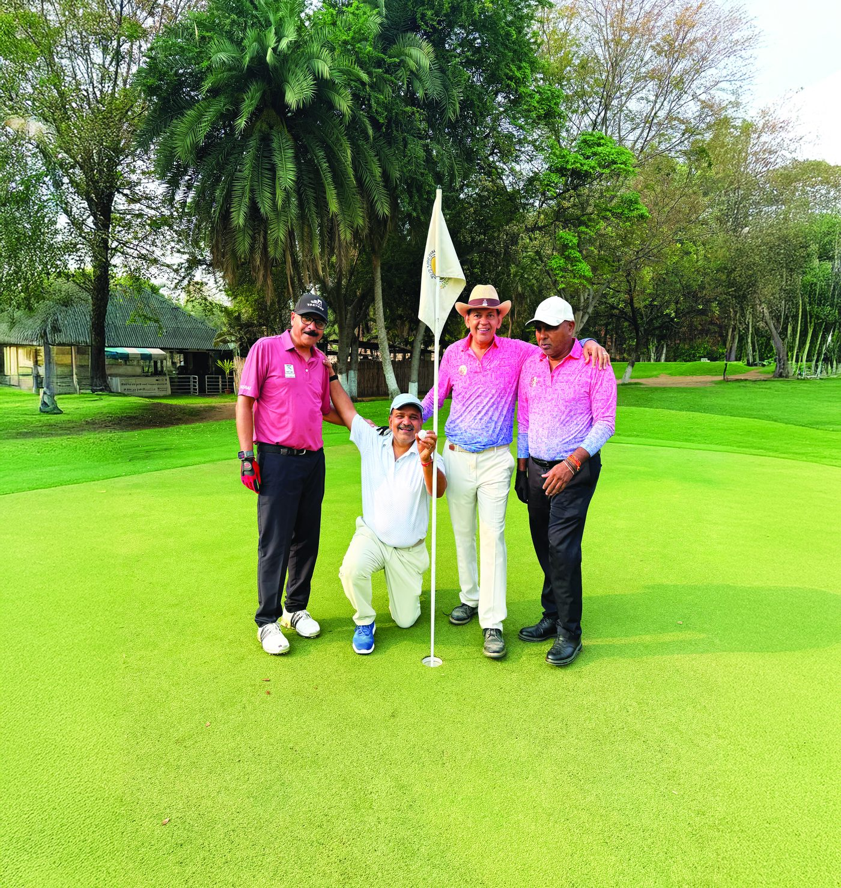

Golf for Charity Tournament
Since its inception in 2016, the Club's Golf Tournament has grown into one of the most prestigious events on Hyderabad's golfing calendar. Hosted at the Hyderabad Golf Association, it consistently attracts over 100 golfers a year — every swing a swing for service.
₹20 Cr+ total funds raised
1,000+ players over the years
100+ golfers each year
Projects enabled: Dialysis Centre at Secunderabad · Rotary Challa Blood Bank · Flow Cytometer at Basavatarakam Cancer Hospital · Girls' toilets across schools · Retina Surgery Centre at Ramdevrao Hospital · Medical Centre at CR Foundation.